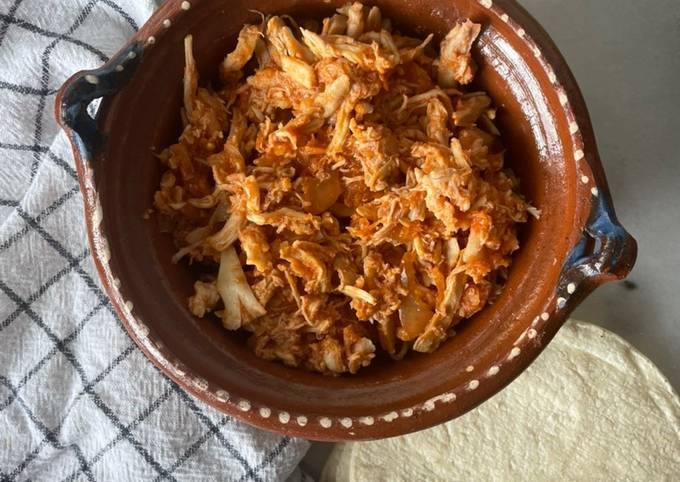

RECETA DE TINGA DE POLLO
Compartida por Rita Pérez
timer
person
Ingredientes
- ½ pollo asado pequeño
- ½ taza de puré de tomate
- ½ cebolla
- ½ taza de agua
- Sal al gusto
- 1 hoja de laurel
Procedimiento
- Pica la cebolla o córtala en juliana, a tu gusto. Puedes agregar aceite si gustas y saltearla unos minutos.
- Deshebra el pollo con las manos bien limpias.
- Agrega a la cebolla la salsa de tomate, el agua y la hoja de laurel.
- Añade el pollo y cocina por unos 5 minutos más.
- ¡Y listo! Ya tienes tu tinga de pollo rapidísima.
